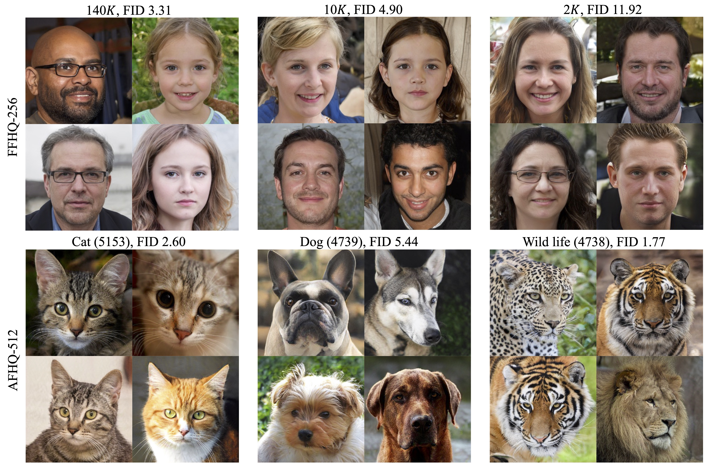
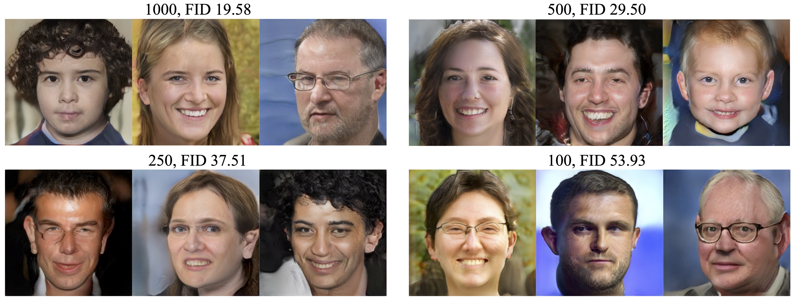

Data-Efficient Instance Generation from Instance Discrimination
1 The Chinese University of Hong Kong
2 ByteDance Inc.
2 ByteDance Inc.
|  |
|  |
@article{yang2021insgen,
title = {Data-Efficient Instance Generation from Instance Discrimination},
author = {Yang, Ceyuan and Shen, Yujun and Xu, Yinghao and Zhou, Bolei},
journal = {arXiv preprint arXiv:2106.04566},
year = {2021}
}


Comment: Proposes an adaptive discriminator augmentation mechanism that significantly stabilizes training in limited data regimes.